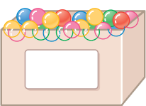

상자 5개에 각각 구슬이 들어 있습니다. 한 상자당 들어 있는 구슬의 수를 대표하는 값을 어떻게 정하면 좋을지 알맞은 말에 ○표 하세요.

72개
70개
68개
71개
69개
한 상자당 들어 있는 구슬의 수는 각 상자에 들어 있는 구슬의 수를 대표할 수
있는 수이므로 (
가장 큰 수
,
가장 작은 수
,
고르게 한 수
)로 정할 수 있습니다.
해설
평균은 자룟값을 고르게 하여 그 자료를 대표하는 값입니다.
리셋
확인